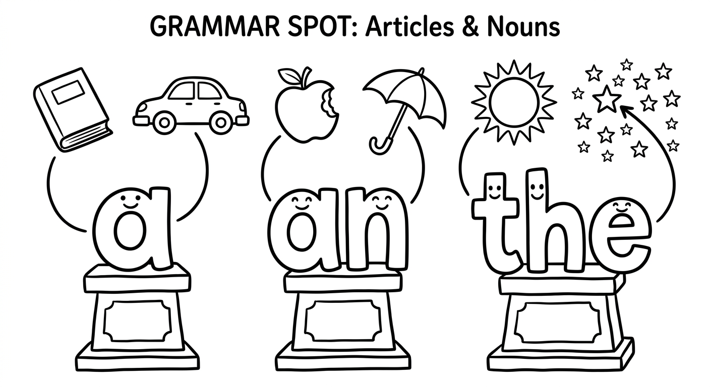
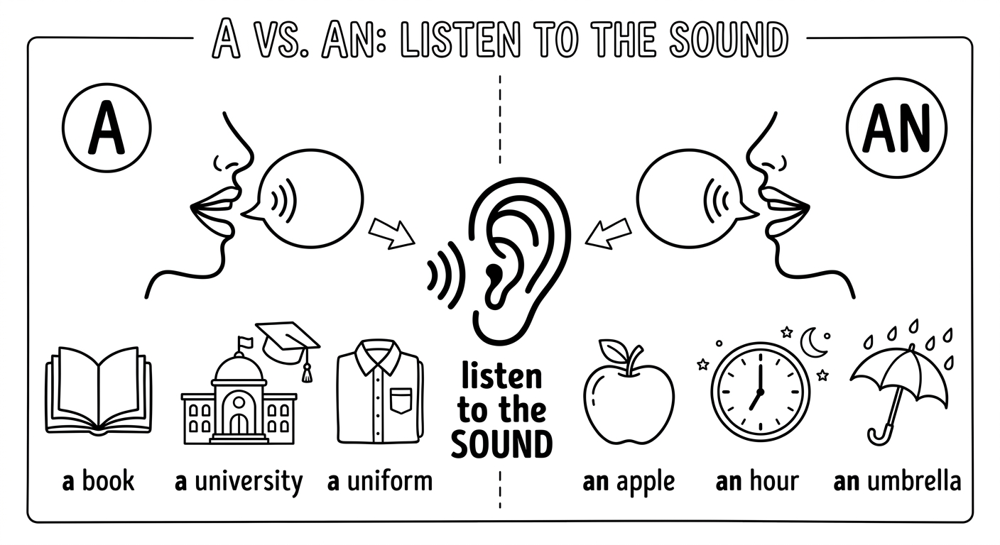
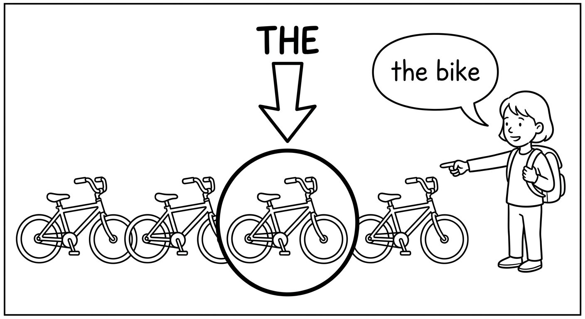
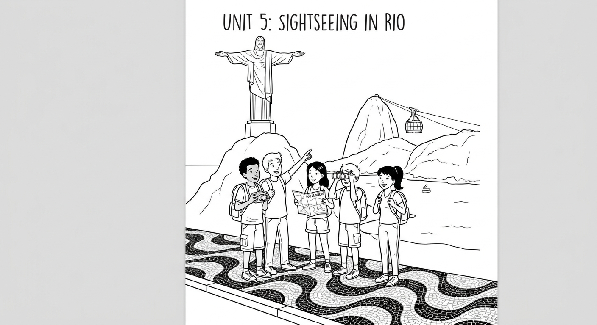
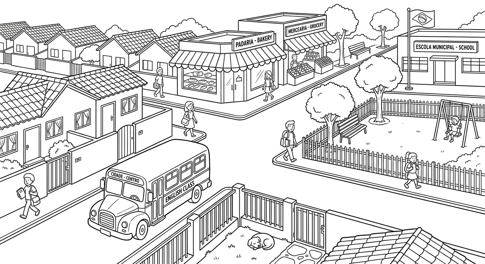
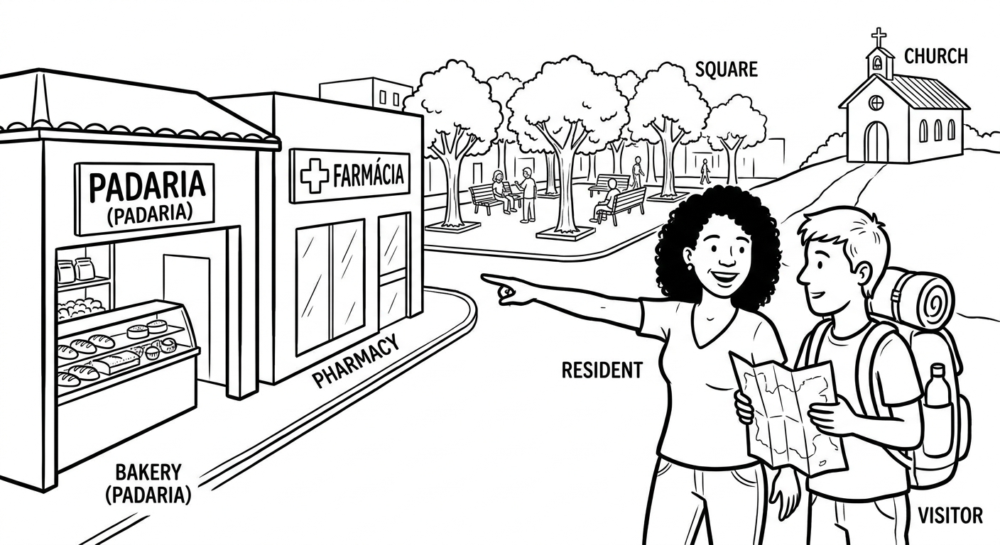

The Neighbourhood Tour: Describe Your City with a, an, and the
Use a, an, the — and no article at all — to describe your neighbourhood or city to a visitor: introduce places for the first time, point to the specific ones you mean, and recommend the best spots.
Use a, an, the — e o artigo zero — para descrever seu bairro ou cidade para um visitante: apresente lugares, indique exatamente qual lugar você quer dizer e recomende os melhores.

Help a visitor who has just arrived: describe your neighbourhood or city, say what there is nearby, and recommend the best places — using a, an, the, or no article. (Ajude um visitante recém-chegado: descreva seu bairro ou cidade e recomende os melhores lugares.)
| Purpose | Useful language |
|---|---|
| Introduce a place (apresentar um lugar) | There is a bakery on my street. / It's an old market. |
| Point to a specific place (indicar um lugar específico) | The bakery near the square is very good. / The bus stop is next to the pharmacy. |
| Recommend the best (recomendar o melhor) | It's the best restaurant in the neighbourhood. / I live in Belo Horizonte — people here love football. |
| Repair communication (resolver mal-entendidos) | Sorry, which place do you mean? / Can you say that more slowly? / What does ___ mean? |
Listen without reading the script. Write short answers.
What is there on this street?
There is a bakery (next to the pharmacy).Where is the restaurant?
The restaurant is on the square.What does the visitor say when he doesn't understand?
He says "Sorry, can you say that more slowly?"0–15: mission and listening warm-up. 15–45: a/an, the, and zero article formula (rule boxes in Units 3.1 and 3.2). 45–80: choose one controlled exercise from Unit 3.1 (Exercise 1 or 2) and one from Unit 3.2 (Exercise 3 or 4); read the Unit 3.2 dialogue in pairs. 80–115: Mission Lab. 115–120: Can-Do exit check and home mission. The reading (Unit 3.3, Exercises 5–6) and the writing task (Unit 3.4, Exercise 7) are extension or homework.
Read twice: Visitor: “Excuse me, I just moved here. Is there a bakery near here?” Resident: “Yes, there is a bakery on this street. It's next to the pharmacy.” Visitor: “Great! And where can I have lunch?” Resident: “There is a restaurant on the square. The restaurant is small, but the food is excellent.” Visitor: “Sorry, can you say that more slowly?” Resident: “The restaurant — on — the — square. It's the best place in the neighbourhood.” Visitor: “Thank you! I love Brazilian food.”
Indefinite Articles (a/an)
The choice between a and an depends on the sound that follows, not the letter.
Use "a" before words that start with a consonant sound:
- a book, a car, a dog, a house, a student
Use "an" before words that start with a vowel sound:
- an apple, an egg, an idea, an orange, an umbrella
Important: It is the sound that matters, not the spelling!
- a university (starts with the consonant sound /j/) — NOT "an university"
- an hour (the "h" is silent, so it starts with the vowel sound /aʊ/) — NOT "a hour"
- a European country (starts with the consonant sound /j/)
- an honest person (the "h" is silent)
We use the indefinite articles a/an in the following situations:
1. First mention — when we introduce something for the first time:
- I saw a dog in the park. The dog was very friendly.
2. One of many — when we talk about one example of a type:
- Can you give me a pen? (any pen, not a specific one)
3. Jobs and occupations — to say what someone does:
- She is a doctor. / He is an engineer.
4. With singular countable nouns — a/an can only be used with singular countable nouns:
- a chair (singular, countable) — correct
- a furniture (uncountable) — INCORRECT
- a chairs (plural) — INCORRECT
5. Expressions of quantity and frequency:
- once a week, twice a month, three times a year
- half an hour, a hundred, a thousand
| Article | English Word | Starting Sound | Português |
|---|---|---|---|
| an | apple | vowel /æ/ | maçã |
| an | elephant | vowel /ε/ | elefante |
| an | idea | vowel /aɪ/ | ideia |
| an | orange | vowel /ɒ/ | laranja |
| an | umbrella | vowel /ʌ/ | guarda-chuva |
| an | hour | vowel /aʊ/ (silent h) | hora |
| an | honest person | vowel /ɒ/ (silent h) | pessoa honesta |
| a | book | consonant /b/ | livro |
| a | car | consonant /k/ | carro |
| a | university | consonant /j/ | universidade |
| a | European city | consonant /j/ | cidade europeia |
| a | one-way street | consonant /w/ | rua de mão única |
Examples with Portuguese Translations
I bought a new phone yesterday.
Eu comprei um celular novo ontem.
Could you lend me a pencil?
Você poderia me emprestar um lápis?
Fernanda is an architect.
Fernanda é arquiteta. (sem artigo em português!)
My brother wants to be a pilot.
Meu irmão quer ser piloto.
We have English class three times a week.
Temos aula de inglês três vezes por semana.
She waited for an hour at the bus stop.
Ela esperou uma hora no ponto de ônibus.
He studies at a university in São Paulo.
Ele estuda em uma universidade em São Paulo.
What a beautiful day!
Que dia lindo!
Remember: "a university" (consonant sound /j/) but "an hour" (vowel sound /aʊ/). Always listen to the sound, not the letter! Other tricky words: a useful tool, a uniform, an MBA, an X-ray.

Suggested time: 25 minutes
Warm-up: Write 10 nouns on the board (apple, university, house, hour, egg, European, umbrella, one, honest, uniform). Ask students to sort them into "a" or "an" columns. This reveals which students already understand the sound rule vs. the spelling rule.
L1 interference: Portuguese uses articles much more freely than English. In Portuguese, you say "Ela é professora" (no article), but in English we say "She is a teacher." Conversely, Portuguese uses articles before possessives ("o meu livro"), but English does not ("my book," NOT "the my book"). Highlight these differences explicitly.
Common error: Brazilian students often say "an university" because the word starts with the letter U. Emphasize that the /juː/ sound in "university" is a consonant sound.
Fill in each blank with a or an. Remember: it depends on the sound, not the letter!
Preencha cada espaço com a ou an. Lembre-se: depende do som, não da letra!
Choose the correct article for each sentence.
Escolha o artigo correto para cada frase.
Rafael wants to be ________ engineer when he grows up.
b) anWe need to wait ________ half hour for the bus.
a) aParis is ________ European capital with many famous museums.
a) aBianca received ________ excellent grade on her English test.
b) anHe bought ________ uniform for the new school year.
a) aDefinite Article (the)

We use the definite article the when both the speaker and the listener know which specific thing is being talked about.
1. Something already mentioned (second mention):
- I saw a cat in the garden. The cat was black and white.
2. Something unique — there is only one:
- the sun, the moon, the internet, the president
3. Superlatives:
- Rio de Janeiro is the most beautiful city I have ever visited.
- She is the tallest girl in the class.
4. With "of" phrases (specifying which one):
- the capital of Brazil, the end of the movie
5. Geographical names (some):
- Rivers: the Amazon, the São Francisco
- Oceans and seas: the Atlantic, the Pacific
- Mountain ranges: the Andes, the Alps
- Plural country names: the United States, the Philippines
- Deserts: the Sahara
6. Musical instruments:
- Gustavo plays the guitar.
7. Ordinal numbers:
- the first, the second, the last
In many cases, English uses no article at all. This is called the zero article. It is one of the biggest differences between English and Portuguese.
1. General statements (talking about things in general):
- Dogs are friendly animals. (dogs in general — NOT "The dogs are friendly animals.")
- Water is essential for life. (water in general)
2. Meals:
- I have breakfast at seven. (NOT "the breakfast")
- Let's have lunch together.
3. Languages:
- She speaks Portuguese and English. (NOT "the Portuguese")
4. Sports:
- They play football on Saturdays. (NOT "the football")
5. Most countries and cities:
- Brazil is a large country. (NOT "The Brazil")
- São Paulo is a big city. (NOT "The São Paulo")
6. Academic subjects:
- I study Mathematics and History.
7. Days and months:
- See you on Monday. Classes start in February.
Examples with Portuguese Translations
The book on the table is mine.
O livro na mesa é meu.
The sun rises in the east.
O sol nasce no leste.
This is the best restaurant in the city.
Este é o melhor restaurante da cidade.
Music makes people happy.
Música faz as pessoas felizes. (Em português usamos "A música faz..." mas em inglês, NÃO se usa "the" para falar em geral.)
Larissa speaks English and Spanish.
Larissa fala inglês e espanhol.
Matheus plays basketball after school.
Matheus joga basquete depois da escola.
Brazil is the largest country in South America.
O Brasil é o maior país da América do Sul. (Em português usamos "O Brasil," mas em inglês NÃO usamos "the.")
The Amazon is the longest river in Brazil.
O Amazonas é o rio mais longo do Brasil.
Watch out for the difference between general and specific meanings:
- I like music. (music in general = NO article) ✓
- I like the music in this movie. (specific music = "the") ✓
- I like the music. (if you mean music in general = WRONG) ✗
Cuidado! Em português, dizemos "Eu gosto de música" (sem artigo) ou "Eu gosto da música desse filme" (com artigo). Em inglês é igual, mas muitos alunos brasileiros adicionam "the" desnecessariamente.
Suggested time: 30 minutes
Dialogue activity: Have students read the dialogue in pairs, then ask them to underline every article (a, an, the) and circle every instance where no article is used (zero article). Discuss why each choice was made. This helps internalize the rules through real context.
L1 interference: Brazilian Portuguese uses "the" (o/a) with country names (O Brasil), with possessives (o meu carro), with meals (o almoço), and in general statements (A música é importante). All of these are zero-article contexts in English. Create a "Portuguese says THE, English says NOTHING" poster for the classroom.
Extension: Ask students to write their own dialogue about a place they visited last weekend. They must use at least 3 examples of "the," 3 examples of "a/an," and 2 examples of zero article.
Fill in each blank with the, a, an, or — (no article). Write "—" if no article is needed.
Preencha cada espaço com the, a, an ou — (sem artigo). Escreva "—" se nenhum artigo for necessário.
Each sentence below has an article mistake. Find the mistake and rewrite the sentence correctly.
Cada frase abaixo tem um erro com artigos. Encontre o erro e reescreva a frase corretamente.
I like the chocolate. (general statement) ✗
I like chocolate.The Brazil is a beautiful country. ✗
Brazil is a beautiful country.She is teacher at my school. ✗
She is a teacher at my school.He plays the football every Saturday. ✗
He plays football every Saturday.I had the breakfast at eight o'clock. ✗
I had breakfast at eight o'clock.He studies at an university in Curitiba. ✗
He studies at a university in Curitiba.Amazon is the longest river in South America. ✗
The Amazon is the longest river in South America.She speaks the English very well. ✗
She speaks English very well.Reading: Visiting a New City

Reading: A Weekend in Rio
Last month, Ana Clara and her classmates went on a school trip to Rio de Janeiro. It was the first time many of them had visited the city, and everyone was very excited.
On the first day, they visited the famous Christ the Redeemer statue on top of Corcovado Mountain. The view from the top was incredible — they could see the entire city, the beaches, and the Atlantic Ocean. Their teacher, Professor Henrique, told them that the statue is one of the Seven Wonders of the Modern World. Ana Clara took a photo with her friends in front of it.
After that, they had lunch at a small restaurant near Copacabana Beach. They tried — typical Brazilian food: rice, beans, and grilled meat. The food was delicious. Lucas, one of Ana Clara's classmates, said it was the best meal he had ever had!
In the afternoon, they took a cable car to the top of Sugarloaf Mountain. From there, they could see the Guanabara Bay and the Niterói Bridge. — Beatriz, who wants to be an architect, was fascinated by the modern buildings along the waterfront.
On the second day, they visited the Maracanã Stadium. — Football is the most popular sport in — Brazil, and many of the students were excited to see the stadium where so many famous matches had taken place. Felipe, who plays — football for his school team, said he dreamed of playing there one day.
Before going home, they walked along the Ipanema boardwalk and visited a street market where they bought souvenirs. Ana Clara bought an "I love Rio" T-shirt and a small painting of the city. It was an unforgettable experience for everyone.
Suggested time: 25 minutes (reading + exercises 5-6)
Pre-reading: Ask students what they know about Rio de Janeiro. Have they been there? What famous places do they know? This activates prior knowledge and previews vocabulary.
Reading strategy: First reading for general understanding. Second reading to identify and highlight all the articles. Ask students: "Why does the text use 'the' before 'Atlantic Ocean' but no article before 'Brazil'?" This develops metalinguistic awareness.
Article hunt: After reading, have students count how many times each article appears. Ask them to categorize each use (first mention, unique, superlative, geographical, etc.).
Read the sentences below. Write T (True) or F (False) based on the reading passage.
Leia as frases abaixo. Escreva T (Verdadeiro) ou F (Falso) com base no texto.
It was the first time Ana Clara had visited Rio de Janeiro.
________ F (The text says it was the first time for "many of them," not specifically Ana Clara.)From Christ the Redeemer, they could see the beaches and the Atlantic Ocean.
________ TThey had lunch at a big restaurant on Copacabana Beach.
________ F (They had lunch at a small restaurant near Copacabana Beach.)Beatriz wants to be an architect.
________ TAna Clara bought a painting and a hat as souvenirs.
________ F (She bought an "I love Rio" T-shirt and a small painting, not a hat.)Answer the following questions based on the reading passage. Write complete sentences.
Responda as perguntas a seguir com base no texto. Escreva frases completas.
Where did the students go on their school trip?
They went to Rio de Janeiro. / The students went on a school trip to Rio de Janeiro.What did their teacher tell them about the Christ the Redeemer statue?
He told them that the statue is one of the Seven Wonders of the Modern World.What could the students see from the top of Sugarloaf Mountain?
They could see the Guanabara Bay and the Niterói Bridge. / From there, they could see the Guanabara Bay and the Niterói Bridge.What is Felipe's dream?
He dreams of playing football at the Maracanã Stadium one day. / Felipe's dream is to play at the Maracanã Stadium.Writing Task

Write a paragraph (8-10 sentences) describing your neighbourhood or city. Use articles correctly: a/an, the, and zero article (no article).
Escreva um parágrafo (8-10 frases) descrevendo seu bairro ou cidade. Use os artigos corretamente: a/an, the e artigo zero (sem artigo).
Include the following in your paragraph:
- The name of your city/neighbourhood (remember: no article with city names!)
- A description of a place you like (use "a" for first mention, then "the")
- Something you do for fun (sports, music, hobbies — check your article rules!)
- A superlative sentence (e.g., "the best," "the biggest")
- A general statement (e.g., about food, people, or weather — zero article)
Before you write, make a short plan. For each sentence, ask yourself: "Am I talking about something specific (the), something general (no article), or something new/one of many (a/an)?" This will help you choose the right article every time.
Antes de escrever, faça um pequeno plano. Para cada frase, pergunte-se: "Estou falando de algo específico (the), algo geral (sem artigo) ou algo novo/um entre muitos (a/an)?"
I live in Campinas, a city in the state of São Paulo. There is a beautiful park near my house called Parque Ecológico. The park has a lake and many trees. I go there every weekend to play football with my friends. Football is the most popular sport in my neighbourhood. Near the park, there is a bakery that sells the best pão de queijo in town. People in Campinas are very friendly. I think it is the best place to live!
Suggested time: 20 minutes (writing) + 10 minutes (peer review)
Assessment criteria:
- Correct use of "a/an" with first-mention nouns and jobs
- Correct use of "the" with specific nouns, superlatives, and ordinals
- Correct use of zero article with general statements, languages, sports, and city names
- Clear paragraph structure (8-10 sentences)
- Variety of article uses (not just one type)
Peer review activity: After writing, have students exchange paragraphs with a partner. The partner should underline every article and check whether it is used correctly. They can use the rules from Units 3.1 and 3.2 as reference. This develops both editing skills and article awareness.
Common errors to watch for:
- "I live in the Belo Horizonte" → "I live in Belo Horizonte"
- "I play the football" → "I play football"
- "She is doctor" → "She is a doctor"
- "I like the pizza" (general) → "I like pizza"
Mission Lab: The Neighbourhood Tour

Work in pairs. Student A is a resident; Student B is a visitor who has just arrived. Then switch roles.
Resident: describe your real neighbourhood or city. Name at least three places — use a/an the first time and the when you talk about them again — and recommend the best place to eat.
Visitor: ask at least four questions (Is there a...? / Where is the...? / What's the best...?) and ask one clarifying question.
Mission success: the visitor can repeat back two places and where they are — without switching to Portuguese.
Your partner must mention one place without saying where it is. Don't guess — ask: Sorry, which place do you mean? or Can you say that more slowly?
In ChatGPT Voice, say: “Act as a visitor who just arrived in my city. Ask me one question at a time about my neighbourhood — places, food, and what to visit. Speak slowly. Correct my main mistake in Portuguese — especially a, an, and the.” Practice for 10 minutes. Offline: think of your street and say ten sentences about its places, using a/an for new information and the for specific places.
Listen for message completion first: did the visitor get a real picture of the place? Then target a/an vs the vs zero article (watch for “the Belo Horizonte”, “the football”), the + superlative in recommendations, and repair language. Do not interrupt every error. Note one successful phrase and one next step for each student. Give feedback in Portuguese where needed.